💄 Profession – Turning Passion into Purpose ✨
August 2020
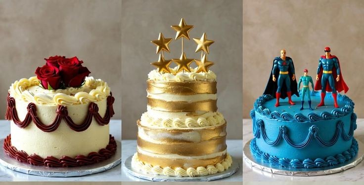This is where everything quietly started. With courage, curiosity, and creativity, she began her journey through a 1-day cake workshop. It wasn’t just about cakes, it was about discovering confidence, discipline, and believing that her passion could become something meaningful.
11 October 2021
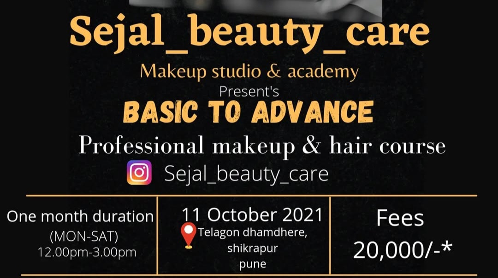A proud and defining moment. She launched her first professional makeup batch, stepping into the role of a mentor. From this day, she wasn’t just learning, she started shaping futures and inspiring confidence in others.
4 February 2022
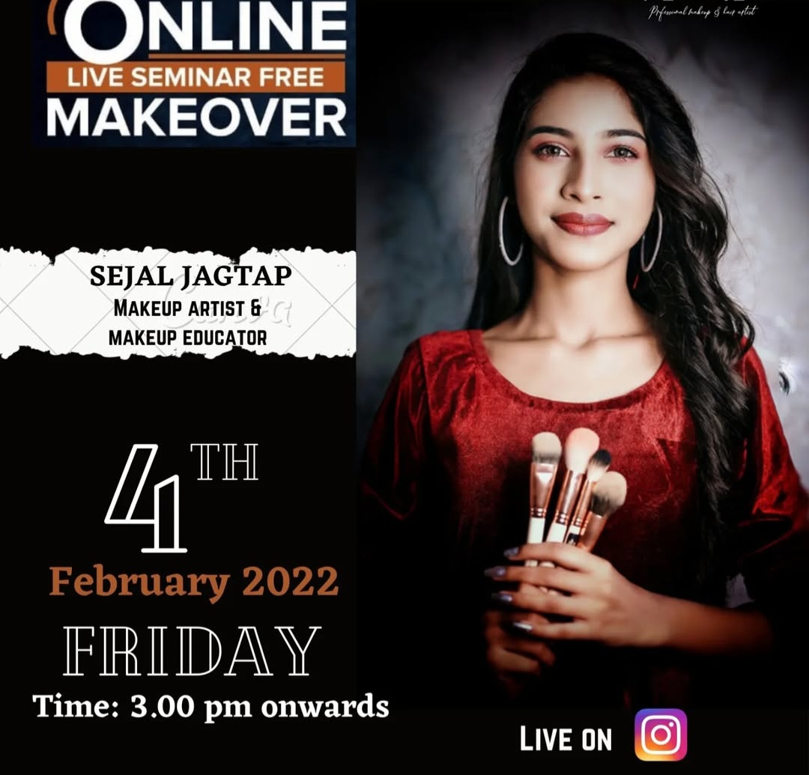During the early phase of her career, she conducted her first Online Live Seminar. This proved her ability to adapt, speak with clarity, and connect with people beyond boundaries a strong sign of the professional she was becoming.
9 March 2022

She earned certification from internationally certified makeup artist Jiya Sosa. This milestone added credibility, confidence, and recognition to her journey, validating her hard work and dedication to excellence.
11 March 2022
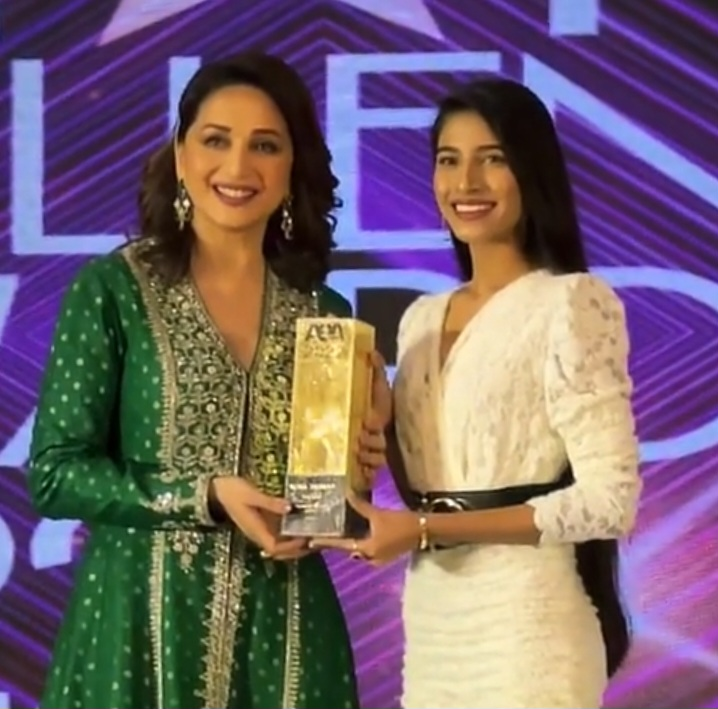A moment of pride beyond words. She was awarded by Madhuri Dixit as the Youngest Makeup Artist in Pune. A recognition that turned years of effort into a lifelong memory.
26 July 2022
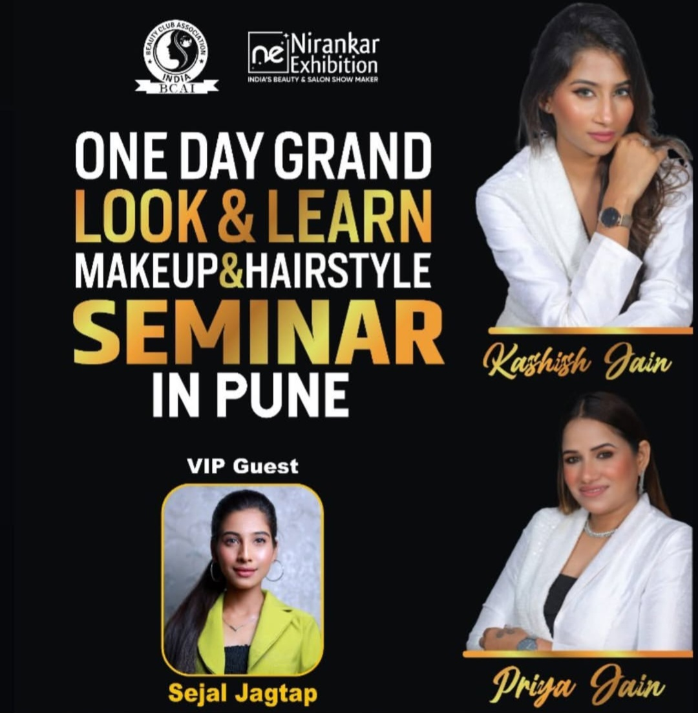She was invited as a VIP Guest at the Look & Learn Makeup & Hairstyle Seminar, Pune. This invitation reflected her growing influence and respect in the beauty industry.
25 April 2023
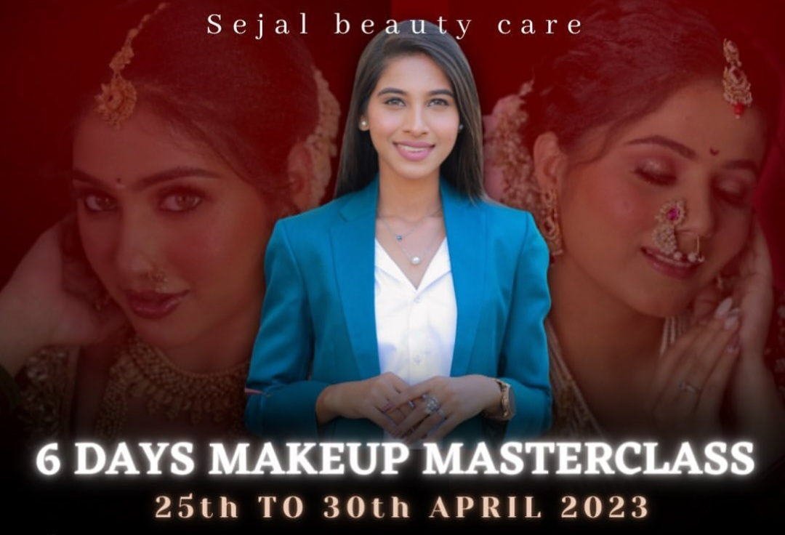She conducted her first 6-day Professional Makeup Masterclass. This milestone showcased her technical skills, patience, leadership, and ability to train professionals with confidence.
30 July 2023
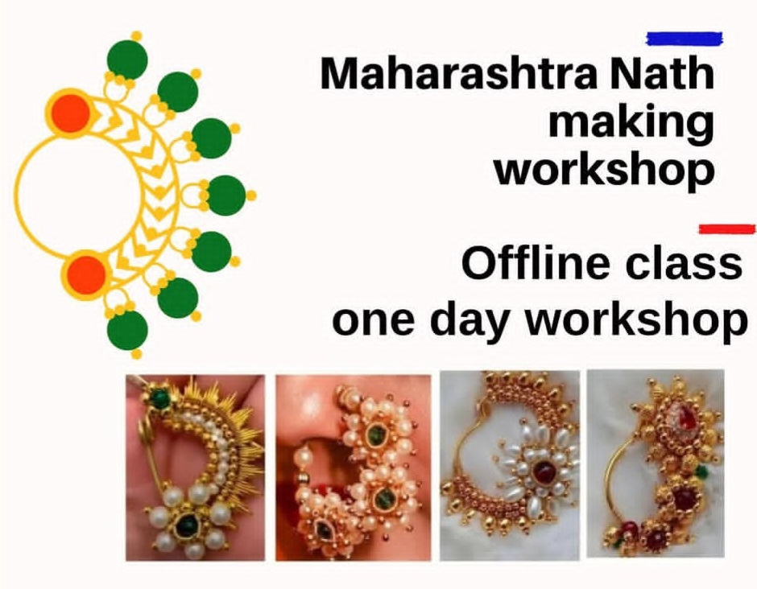She conducted a One Day Maharashtra Nath Making Workshop in Shikrapur, successfully preserving and teaching traditional craftsmanship with modern finesse.
10 October 2024
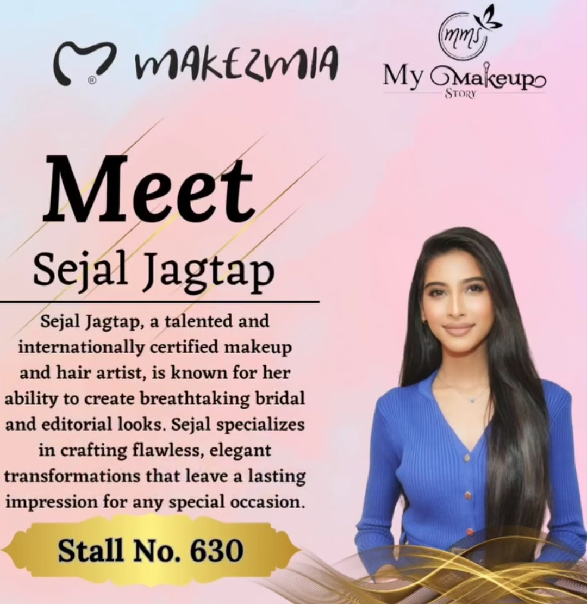She became a part of MAKEZMIA, a professional makeup brand offering beauty services and training. This collaboration marked her entry into a larger professional ecosystem.
18 March 2025
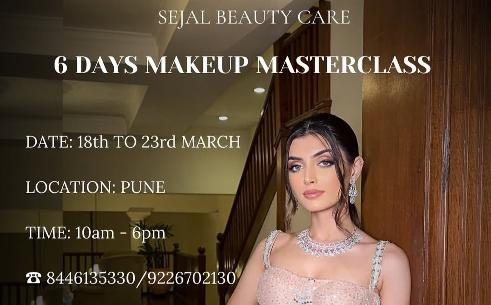She successfully completed another 6-day Professional Makeup Masterclass on this special day, proving her consistency, growth, and commitment to continuous learning.
21 July 2025
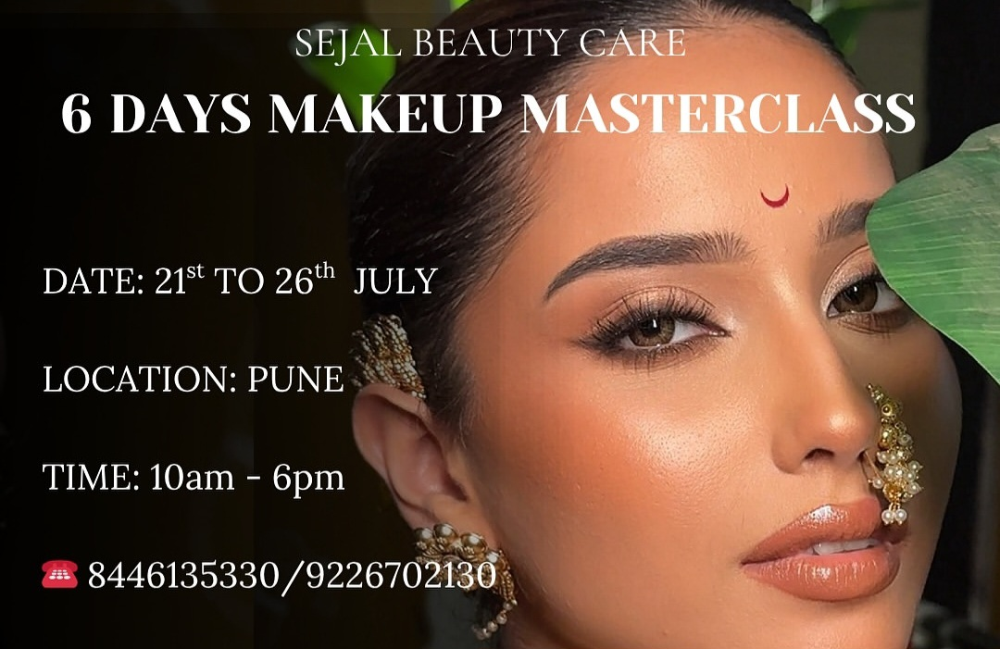Her most recent Professional Makeup Masterclass stronger, wiser, and more impactful than ever. A reflection of how far passion, patience, and perseverance can take you.
3 March 2026
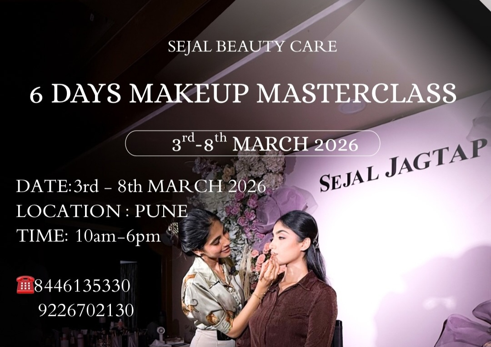
She is all set with her
upcoming 6 days Professional Makeup Masterclass
starting from 3rd March 2026.
Registrations are now open. Please do register.
Maharashtra's Biggest Makes Event !!
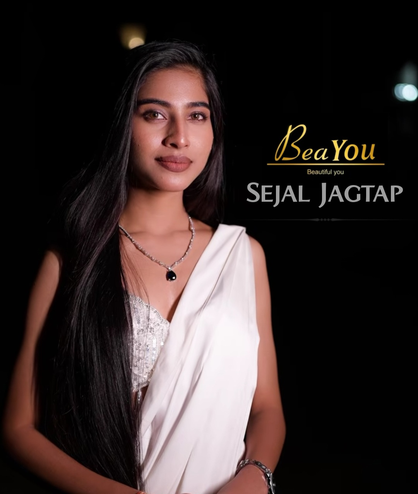
Presented by @beayou_india, this is more than just an event,
it’s an exclusive beauty masterclass experience led by industry experts.
Having our ma’am as a part of it makes it even more special. ✨🤩
📍 Hyatt, Pune
📅 6th & 7th April